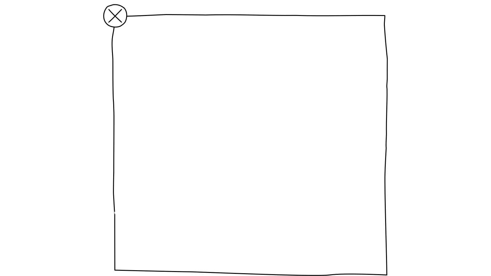

Unerwartete Reaktionen, etwa durch das Setzen des Fokus oder durch eine Eingabe, können verwirrend wirken.
Unterbrechungen oder Änderungen sollten für Nutzer:innen immer vorhersehbar sein.
Es ist wichtig, dass jede Veränderung rechtzeitig angekündigt wird, damit sich alle darauf einstellen können und die Nutzung verständlich und kontrollierbar bleibt.